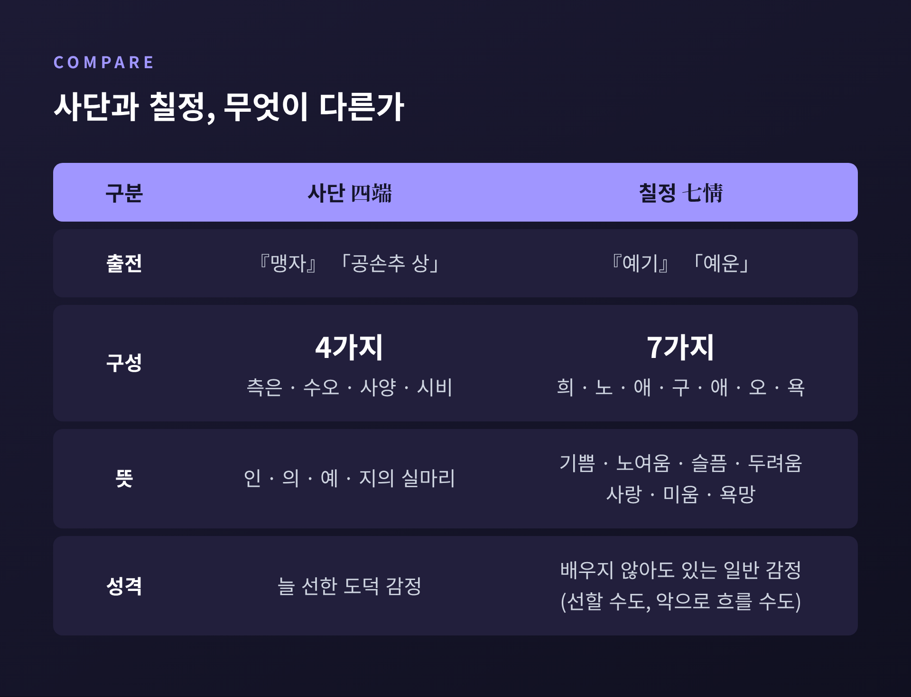
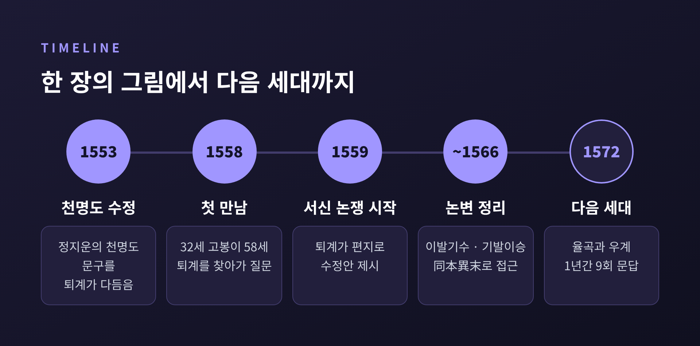
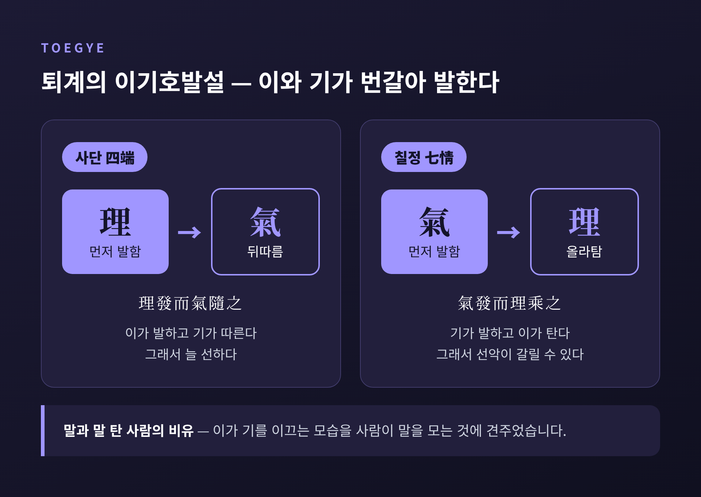
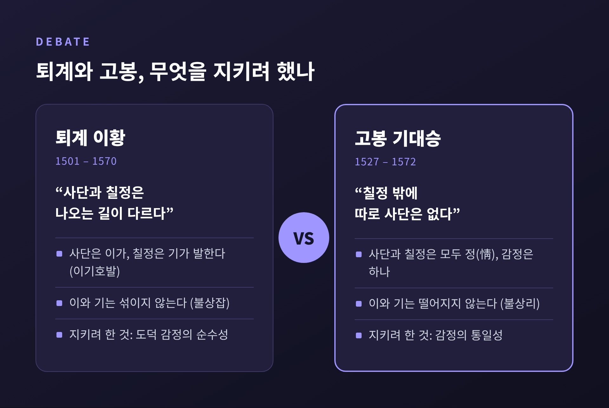

사단칠정 논쟁 — 퇴계와 고봉은 왜 8년 동안 감정을 따졌을까

이번 글에서는 조선 유학의 가장 유명한 토론, 퇴계 이황과 고봉 기대승의 사단칠정 논쟁을 정리해 보겠습니다. 어려운 한자어가 많지만, 질문 자체는 단순합니다.
세 줄 요약 - 사단(맹자의 네 가지 도덕 감정)과 칠정(예기의 일곱 가지 일반 감정)이 같은 뿌리인지 다른 뿌리인지를 두고 벌어진 논쟁입니다. - 퇴계는 "사단은 이(理)가, 칠정은 기(氣)가 발한 것"이라 나누었고, 고봉은 "칠정 밖에 따로 사단은 없다"며 맞섰습니다. - 1559년부터 1566년까지 이어진 이 편지 토론은 율곡 이이와 우계 성혼의 논쟁으로 이어지며 조선 성리학의 큰 줄기를 만들었습니다.
■ 사단과 칠정, 두 목록은 어디서 왔나
먼저 두 단어의 출처부터 보겠습니다.
사단(四端)은 『맹자』 「공손추 상」에 나옵니다. 측은지심(불쌍히 여기는 마음)은 인(仁)의, 수오지심(부끄러워하고 미워하는 마음)은 의(義)의, 사양지심(양보하는 마음)은 예(禮)의, 시비지심(옳고 그름을 가리는 마음)은 지(智)의 실마리라는 구절입니다. '단(端)'은 실 끝, 곧 실마리라는 뜻입니다.
맹자는 유명한 예를 듭니다. 우물에 빠지려는 아이를 갑자기 보면 누구나 깜짝 놀라 안타까운 마음이 든다는 것입니다. 아이 부모와 친해지려는 계산도, 이웃의 칭찬을 바라는 마음도 아닙니다. 맹자에게 사단은 사람이 본래 선하다는 증거였습니다.
칠정(七情)은 『예기』 「예운」편에 나옵니다. 희(기쁨)·노(노여움)·애(슬픔)·구(두려움)·애(사랑)·오(미움)·욕(욕망), 이 일곱 가지는 배우지 않아도 사람에게 있는 감정이라고 했습니다.

문제는 여기서 생깁니다. 사단은 늘 선한 마음으로 그려집니다. 칠정은 선할 수도, 지나치면 악으로 흐를 수도 있는 감정입니다. 서로 다른 책에서 다른 맥락으로 나온 두 목록을 하나의 체계 안에 넣으려면, 둘의 관계를 설명해야 했습니다.
■ 성리학의 두 열쇠말, 이(理)와 기(氣)
논쟁을 이해하려면 성리학의 두 개념을 알아야 합니다.
이(理)는 세상 만물에 질서를 부여하는 원리입니다. 형체가 없습니다. 기(氣)는 실제로 움직이고 모양을 이루는 바탕입니다. 맑을 수도, 흐려질 수도 있습니다.
비유하자면 이는 설계도, 기는 그 설계도대로 지어지는 재료와 힘에 가깝습니다. 주희는 둘이 따로 떨어져 있지 않다고 하면서도, 근원을 따지면 이가 앞선다고 보았습니다.
여기서 두 원칙이 나옵니다. 이와 기는 서로 떨어지지 않는다(이기불상리). 그러나 서로 섞이지도 않는다(이기불상잡). 어느 쪽에 무게를 두느냐가 뒤에 나올 퇴계와 율곡의 갈림길이 됩니다.
사실 사단을 이에, 칠정을 기에 연결하는 발상은 조선 초 권근에게서 이미 보입니다. 그것을 정면으로 따지는 논쟁은 16세기 중반, 한 장의 그림에서 시작됩니다.
■ 한 장의 그림에서 시작된 논쟁
정지운(호 추만)이라는 학자가 성리학 공부용 그림인 「천명도」를 만들었습니다. 1553년 그는 퇴계에게 수정을 부탁했고, 퇴계는 주희의 설을 바탕으로 그림과 해설을 함께 고쳤습니다.
원래 그림에는 이렇게 적혀 있었습니다. "사단은 이에서 발하고, 칠정은 기에서 발한다(四端發於理 七情發於氣)." 퇴계는 이를 "사단은 이의 발현이요, 칠정은 기의 발현이다(四端理之發 七情氣之發)"로 다듬었습니다.
1558년, 갓 과거에 합격한 서른두 살의 기대승이 이 그림을 보고 쉰여덟 살의 퇴계를 찾아갔습니다. 퇴계는 당시 성균관 대사성이었습니다. 스물여섯 살 아래의 신진 학자가 대학자의 학설에 의문을 던진 셈입니다.
이듬해인 1559년, 퇴계가 편지로 수정안을 내놓으면서 논쟁은 본격화됩니다. "사단의 발현은 순수한 이이므로 선하지 않음이 없고, 칠정의 발현은 기를 겸하므로 선악이 있다." 이 문장이 이후 오랜 토론의 출발점이 됩니다.

■ 퇴계의 생각 — 도덕 감정은 뿌리부터 다르다
퇴계가 지키고 싶었던 것은 분명했습니다. 사단은 처음부터 선한 마음이라는 점입니다.
사단이 칠정과 똑같이 기에서 나온다면, 우물가의 아이를 향한 측은한 마음도 기쁨이나 분노처럼 '그때그때 흔들리는 감정'이 되어버립니다. 그러면 맹자가 말한 성선(性善)의 근거가 약해집니다. 그래서 퇴계는 사단과 칠정이 나오는 길을 나누어 설명했습니다.
고봉의 반론을 거치며 퇴계의 표현은 더 정교해집니다. 최종 정리는 이렇습니다.
"사단은 이가 발하고 기가 따르는 것이며, 칠정은 기가 발하고 이가 그것을 타는 것이다(四端理發而氣隨之 七情氣發而理乘之)."
이와 기가 서로 번갈아 발한다고 해서 이기호발설(理氣互發說)이라 부릅니다. 퇴계는 이가 기를 이끄는 모습을 말 탄 사람이 말을 이끄는 것에 비유하기도 했습니다. 사단에서는 사람이 앞장서 말을 몰고, 칠정에서는 말이 먼저 움직이고 사람이 그 위에 올라탄 형국입니다.

■ 고봉의 반론 — 감정은 하나다
고봉은 이 구도를 받아들이지 않았습니다. 그의 주장은 크게 세 갈래입니다.
첫째, 사단과 칠정은 모두 정(情), 곧 감정입니다. 감정은 하나이므로 두 종류로 쪼갤 수 없다고 보았습니다.
둘째, 칠정 밖에 따로 사단이 있는 것이 아닙니다. 사단도 결국 칠정 안에 들어 있으니, 둘을 하나로 묶어 보아야 한다는 입장입니다.
셋째, 이와 기는 떨어질 수 없습니다. 사단은 이에서, 칠정은 기에서 나온다고 하면 이와 기가 각각 별개의 물건처럼 됩니다. 게다가 주희의 체계에서 이는 형체도 작용도 없는데, "이가 발한다"는 말은 그와 어긋난다는 지적이었습니다.

두 사람은 100통이 넘는 편지를 주고받았다고 전합니다. 직접 만난 것은 서울에서 세 번뿐이었다고 합니다. 당대 학자들은 이 편지를 베껴 돌려 읽으며 함께 토론했습니다. 지금으로 치면 공개 학술 토론에 가까웠던 셈입니다.
논쟁의 끝은 어땠을까요. 고봉은 "정이 발할 때 혹은 이가 움직여 기가 함께하고, 혹은 기가 감응해 이가 탄다"는 절충안을 내놓기도 했습니다. 퇴계는 이후 사단과 칠정을 '뿌리는 같고 끝이 다르다(同本異末)'고 정리하며 한발 다가섰다는 평가가 있습니다. 반면 끝내 합의에 이르지 못했다고 보는 연구자도 있습니다.
결론이 어떻든, 태도는 인상적입니다. 퇴계는 훗날 선조에게 고봉을 두루 통달한 학자라는 뜻의 '통유(通儒)'로 추천했습니다. 나이와 지위를 떠나 생각으로 맞선 상대를 끝까지 존중한 것입니다.
■ 율곡과 우계, 논쟁은 다음 세대로
퇴계가 세상을 떠난 지 2년 뒤인 1572년, 논쟁은 다시 불붙습니다. 이번에는 율곡 이이와 우계 성혼이었습니다. 1년 사이 아홉 차례 문답이 오갔고, 대체로 성혼이 묻고 율곡이 답했습니다.
흥미로운 점은 성혼의 위치입니다. 그는 처음엔 고봉의 설을 존중했지만, 퇴계 호발설에 담긴 도덕적 고민을 이해하고 그 취지에 공감하게 되었습니다. 그래서 율곡에게 이 문제를 어떻게 정리해야 하느냐고 물었습니다.
율곡의 답이 기발이승일도설(氣發理乘一途說)입니다. 발하는 것은 오직 기이고, 이는 그 위에 올라탈 뿐이라는 뜻입니다. 길은 하나라는 것입니다. 이는 스스로 움직이지 않으므로 '이가 발한다'는 경우는 따로 없다고 보았습니다.
사단과 칠정의 관계도 정리했습니다. 칠정이 사단을 포함한다는 칠정포사단(七情包四端)입니다. 사단은 칠정 가운데 선한 부분만 골라 말한 것이니, 칠정은 사단을 품지만 그 반대는 아니라는 설명입니다. 고봉의 문제의식을 이어받아 더 체계화한 셈입니다.
■ 주리와 주기, 그 이름표는 조심해서
이 논쟁을 계기로 퇴계의 학문을 잇는 퇴계학파와 율곡을 잇는 율곡학파가 갈라져 발전했습니다. 18세기에는 사람과 동물의 본성이 같은가를 두고 호락논쟁이 벌어지는 등, 사단칠정에서 시작된 질문이 형태를 바꿔 이어졌습니다. 『사단칠정 논쟁』을 영어로 옮긴 연구자 마이클 칼턴은 이 논쟁을 조선 시대의 가장 중요한 지적 논쟁이라고 평가했습니다.
흔히 퇴계 쪽을 '주리(主理)', 율곡 쪽을 '주기(主氣)'라 부릅니다. 예전엔 이 구분이 조선 유학을 설명하는 기본 틀처럼 쓰였습니다. 지금은 조금 더 신중하게 다룹니다.
이 이분법은 일제강점기 학자 다카하시 도루가 내놓은 도식으로, 학파와 당파를 뒤섞고 사상을 지나치게 단순화했다는 비판을 받습니다. 율곡 자신도 기를 중시한 서경덕을 비판했습니다. 다만 퇴계가 '가치'의 관점에서, 율곡이 '사실'의 관점에서 감정을 보았다는 차이를 짚어낸 점은 의미가 있다고 평가됩니다.
■ 오늘 이 논쟁이 말을 거는 방식
사단칠정 논쟁을 오늘의 말로 옮기면 이런 질문이 됩니다. 도덕적인 마음은 다른 감정과 종류가 다른 특별한 것일까. 아니면 같은 감정이 적절한 때 적절한 방식으로 드러난 것일까.
퇴계의 편에 서면, 남의 고통 앞에서 저절로 일어나는 마음에는 따로 지켜야 할 순수함이 있습니다. 고봉과 율곡의 편에 서면, 분노나 슬픔도 이치에 맞게 드러나면 곧 도덕이 됩니다. 한쪽은 도덕 감정의 고유함을, 다른 쪽은 감정 전체의 통일성을 붙듭니다.
이 논쟁을 '도덕심리학적' 질문으로 읽는 연구자도 있습니다. 도덕 판단에서 감정이 하는 역할은 오늘날에도 활발히 논의되는 주제입니다. 다만 16세기 성리학의 개념을 현대 심리학 이론과 그대로 겹쳐 보기는 어렵습니다. 닮은 질문을 던졌다는 정도로 받아들이는 편이 정직하다고 생각합니다.
정리하면 이렇습니다. 사단칠정 논쟁은 이긴 사람을 가리는 싸움이 아니었습니다. 선한 마음이 어디서 오는지를 끝까지 정밀하게 따져 보려는 시도였습니다.
"마음을 정확히 알아야 마음을 닦을 수 있다."
우물가의 아이를 보고 가슴이 철렁할 때, 그 마음은 특별한 것일까요, 아니면 잘 다스려진 평범한 감정일까요. 어느 쪽이라고 답하시든, 그 질문을 붙들고 있는 순간 이미 460여 년 전 두 학자의 편지 곁에 서 계신 것입니다.
#사단칠정 #사단칠정논쟁 #퇴계이황 #고봉기대승 #율곡이이 #성리학 #이기호발설 #기발이승일도설 #조선유학 #한국철학